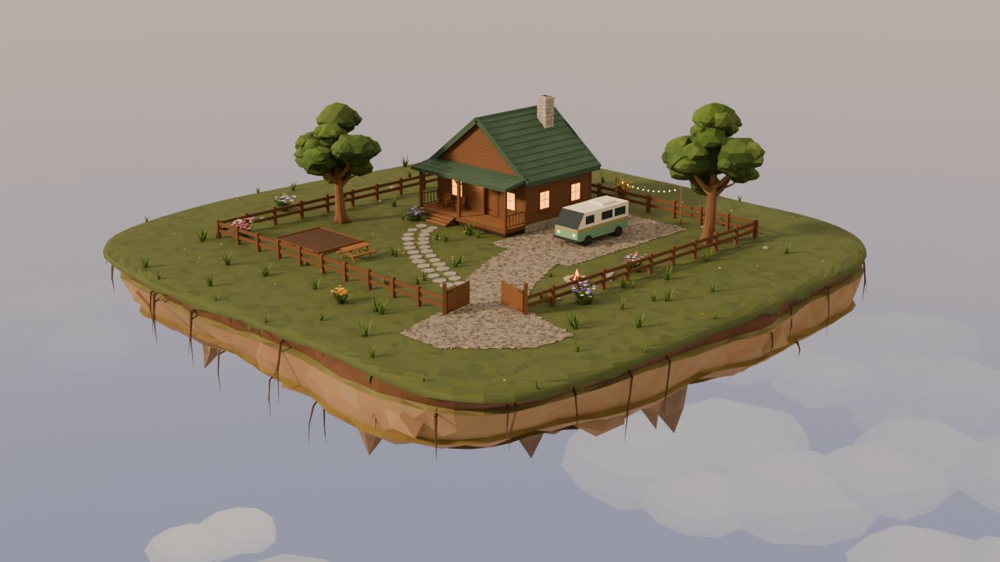

下载Download
找到 Steam 里的 Nomad Drive，装好 BepInEx 和模组。Finds Nomad Drive in Steam, then installs BepInEx and the mod.
- 01下载Download点上面的按钮。Use the button above.
- 02双击运行Double-clickWindows 可能提示
未知发布者
，
点更多信息 → 仍要运行
。Windows may sayUnknown publisher.
ClickMore info → Run anyway.
- 03进游戏Play开单人模式，按 B 打开手账。Start single-player, then press B for the journal.
其他方式Other ways
链接待上传。Link not up yet.
手动安装 zipManual zip install
- 装 BepInEx 5 到游戏目录。Install BepInEx 5 into the game folder.
- 解压 zip 到游戏目录，保留文件夹。Unzip into the game folder, keep the folders as they are.
- 确认有
BepInEx/plugins/CloudCabin，进单人模式，按 B。ConfirmBepInEx/plugins/CloudCabinis there, start single-player, press B.
